<!doctype html><html lang="en"><head><meta charset="utf-8"><meta name="viewport" content="width=device-width,initial-scale=1"><meta name="description" content="Gabriel Cirker’s rowing energy-transfer research: current report, reproducible models, synthetic demonstrations, and a versioned research archive."><title>Rowing Energy Transfer | Gabriel Cirker</title><link rel="stylesheet" href="assets/style.css?v=editorial-2"></head><body><a class="skip" href="#main">Skip to content</a><header><div class="wrap"><a class="brand" href="https://gabrielcirker.github.io/">Gabriel Cirker <span>Rowing research</span></a><nav aria-label="Main navigation"><a href="https://gabrielcirker.github.io/">Portfolio</a><a href="report/rowing-report.pdf">Report PDF</a><a href="archive.html">Archive</a><a href="https://github.com/gabrielcirker/rowing-research">GitHub</a></nav></div></header><main id="main"><section class="hero"><div class="wrap"><div class="hero-grid"><div><div class="eyebrow">Computational mechanics · Research collection</div><h1>The mechanics of a rowing stroke.</h1><p>How periodic thrust, drag, and crew motion shape boat speed. A computational study of energy transfer, with open models and synthetic sensing prototypes.</p><p class="author">Gabriel Cirker</p><p class="affiliation">Original manuscript: St. John’s University.<br><small>Revision affiliation: University of Michigan, Ann Arbor.</small></p><div class="actions"><a class="button light" href="#report">Read the study ↓</a><a class="button ghost" href="archive.html">Explore the archive</a></div></div><figure class="hero-chart"><figcaption>Periodic thrust produces a cycle of acceleration and coasting.</figcaption></figure></div><div class="stats"><div class="stat"><strong>20 s</strong><span>Illustrative startup simulation</span></div><div class="stat"><strong>5.785 m/s</strong><span>Average speed, last half</span></div><div class="stat"><strong>141.2 kJ</strong><span>Modeled thrust work</span></div><div class="stat"><strong>6.49%</strong><span>Startup kinetic-energy fraction</span></div></div></div></section>
<section id="overview"><div class="wrap"><div class="eyebrow">01 / The question</div><h2>Where does the input work go?</h2><p class="intro">The baseline represents the boat and crew as a single mass under periodic thrust and quadratic resistance. The extensions explore how prescribed crew motion, pitch, and sensing could support a more detailed model.</p><div class="grid"><article class="card"><span class="number">01 · BASELINE</span><h3>Thrust, drag, and speed</h3><p>Track velocity and energy accounting through repeated drive and recovery phases. Compare mass, drag, and stroke-period inputs.</p></article><article class="card"><span class="number">02 · EXTENSIONS</span><h3>Moving mass and pitch</h3><p>Prescribed slide kinematics and a reduced surge–pitch surrogate explore internal motion and numerical consistency.</p></article><article class="card"><span class="number">03 · PROTOTYPES</span><h3>Sensing and identification</h3><p>Synthetic IMU signals, event detection, and parameter fitting provide a testbed for a future measurement workflow.</p></article></div><aside class="note"><strong>Interpretation matters.</strong> The 6.49% ratio is the kinetic-energy gain divided by modeled thrust work during startup. It is not rowing or metabolic efficiency. These are simulations and research prototypes, not measured crew results or validated technique recommendations.</aside></div></section>
<section id="report" class="soft"><div class="wrap"><div class="section-top"><div><div class="eyebrow">02 / Current manuscript</div><h2>Read the full report.</h2><p class="intro">A Cycle-Resolved Model and a Framework for Disturbance Analysis</p></div><a class="button" href="report/rowing-report.pdf" download>Download PDF · 12 pages</a></div><p class="reader-help">Read every page here. Scroll inside the reader or choose a page. Each page also has an expandable text version.</p><div class="reader"><div class="reader-bar"><label for="page-select">Report page <select id="page-select"><option value="1">1 / 12</option><option value="2">2 / 12</option><option value="3">3 / 12</option><option value="4">4 / 12</option><option value="5">5 / 12</option><option value="6">6 / 12</option><option value="7">7 / 12</option><option value="8">8 / 12</option><option value="9">9 / 12</option><option value="10">10 / 12</option><option value="11">11 / 12</option><option value="12">12 / 12</option></select></label><div><button id="prev-page" type="button">← Previous</button> <button id="next-page" type="button">Next →</button></div><a href="report/report.txt">Plain text</a></div><div class="reader-pages" id="reader-pages" tabindex="0" aria-label="Scrollable full report"><figure class="page" id="page-1">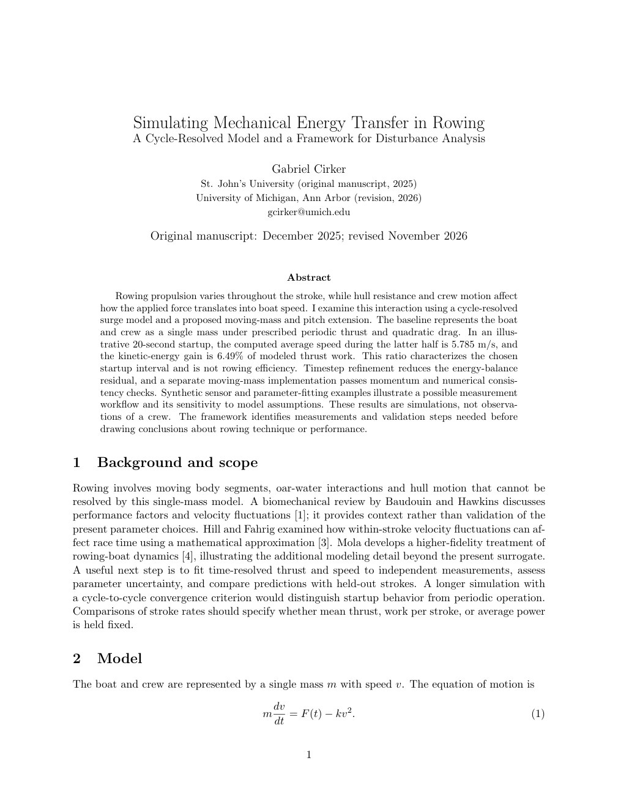<figcaption>Page 1 of 12</figcaption><details><summary>Read page text</summary><pre>Simulating Mechanical Energy Transfer in Rowing
A Cycle-Resolved Model and a Framework for Disturbance Analysis
Gabriel Cirker
St. John’s University (original manuscript, 2025)
University of Michigan, Ann Arbor (revision, 2026)
gcirker@umich.edu
Original manuscript: December 2025; revised November 2026
Abstract
Rowing propulsion varies throughout the stroke, while hull resistance and crew motion affect
how the applied force translates into boat speed. I examine this interaction using a cycle-resolved
surge model and a proposed moving-mass and pitch extension. The baseline represents the boat
and crew as a single mass under prescribed periodic thrust and quadratic drag. In an illus-
trative 20-second startup, the computed average speed during the latter half is 5.785 m/s, and
the kinetic-energy gain is 6.49% of modeled thrust work. This ratio characterizes the chosen
startup interval and is not rowing efficiency. Timestep refinement reduces the energy-balance
residual, and a separate moving-mass implementation passes momentum and numerical consis-
tency checks. Synthetic sensor and parameter-fitting examples illustrate a possible measurement
workflow and its sensitivity to model assumptions. These results are simulations, not observa-
tions of a crew. The framework identifies measurements and validation steps needed before
drawing conclusions about rowing technique or performance.
1
Background and scope
Rowing involves moving body segments, oar-water interactions and hull motion that cannot be
resolved by this single-mass model. A biomechanical review by Baudouin and Hawkins discusses
performance factors and velocity fluctuations [1]; it provides context rather than validation of the
present parameter choices. Hill and Fahrig examined how within-stroke velocity fluctuations can af-
fect race time using a mathematical approximation [3]. Mola develops a higher-fidelity treatment of
rowing-boat dynamics [4], illustrating the additional modeling detail beyond the present surrogate.
A useful next step is to fit time-resolved thrust and speed to independent measurements, assess
parameter uncertainty, and compare predictions with held-out strokes. A longer simulation with
a cycle-to-cycle convergence criterion would distinguish startup behavior from periodic operation.
Comparisons of stroke rates should specify whether mean thrust, work per stroke, or average power
is held fixed.
2
Model
The boat and crew are represented by a single mass m with speed v. The equation of motion is
mdv
dt = F(t) −kv2.
(1)
1
</pre></details></figure><figure class="page" id="page-2">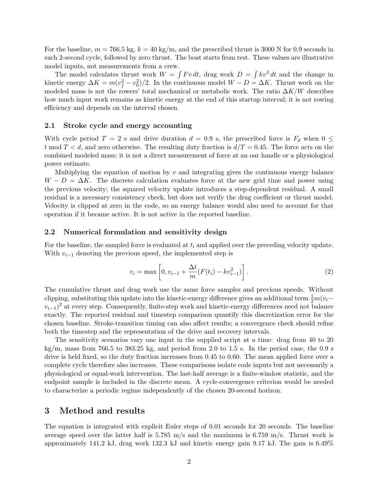<figcaption>Page 2 of 12</figcaption><details><summary>Read page text</summary><pre>For the baseline, m = 766.5 kg, k = 40 kg/m, and the prescribed thrust is 3000 N for 0.9 seconds in
each 2-second cycle, followed by zero thrust. The boat starts from rest. These values are illustrative
model inputs, not measurements from a crew.
The model calculates thrust work W =
R
Fv dt, drag work D =
R
kv3 dt and the change in
kinetic energy ∆K = m(v2
f −v2
0)/2. In the continuous model W −D = ∆K. Thrust work on the
modeled mass is not the rowers’ total mechanical or metabolic work. The ratio ∆K/W describes
how much input work remains as kinetic energy at the end of this startup interval; it is not rowing
efficiency and depends on the interval chosen.
2.1
Stroke cycle and energy accounting
With cycle period T = 2 s and drive duration d = 0.9 s, the prescribed force is Fd when 0 ≤
t mod T &lt; d, and zero otherwise. The resulting duty fraction is d/T = 0.45. The force acts on the
combined modeled mass; it is not a direct measurement of force at an oar handle or a physiological
power estimate.
Multiplying the equation of motion by v and integrating gives the continuous energy balance
W −D = ∆K. The discrete calculation evaluates force at the new grid time and power using
the previous velocity; the squared velocity update introduces a step-dependent residual. A small
residual is a necessary consistency check, but does not verify the drag coefficient or thrust model.
Velocity is clipped at zero in the code, so an energy balance would also need to account for that
operation if it became active. It is not active in the reported baseline.
2.2
Numerical formulation and sensitivity design
For the baseline, the sampled force is evaluated at ti and applied over the preceding velocity update.
With vi−1 denoting the previous speed, the implemented step is
vi = max

0, vi−1 + ∆t
m (F(ti) −kv2
i−1)

.
(2)
The cumulative thrust and drag work use the same force samples and previous speeds. Without
clipping, substituting this update into the kinetic-energy difference gives an additional term 1
2m(vi−
vi−1)2 at every step. Consequently, finite-step work and kinetic-energy differences need not balance
exactly. The reported residual and timestep comparison quantify this discretization error for the
chosen baseline. Stroke-transition timing can also affect results; a convergence check should refine
both the timestep and the representation of the drive and recovery intervals.
The sensitivity scenarios vary one input in the supplied script at a time: drag from 40 to 20
kg/m, mass from 766.5 to 383.25 kg, and period from 2.0 to 1.5 s. In the period case, the 0.9 s
drive is held fixed, so the duty fraction increases from 0.45 to 0.60. The mean applied force over a
complete cycle therefore also increases. These comparisons isolate code inputs but not necessarily a
physiological or equal-work intervention. The last-half average is a finite-window statistic, and the
endpoint sample is included in the discrete mean. A cycle-convergence criterion would be needed
to characterize a periodic regime independently of the chosen 20-second horizon.
3
Method and results
The equation is integrated with explicit Euler steps of 0.01 seconds for 20 seconds. The baseline
average speed over the latter half is 5.785 m/s and the maximum is 6.759 m/s. Thrust work is
approximately 141.2 kJ, drag work 132.3 kJ and kinetic energy gain 9.17 kJ. The gain is 6.49%
2
</pre></details></figure><figure class="page" id="page-3">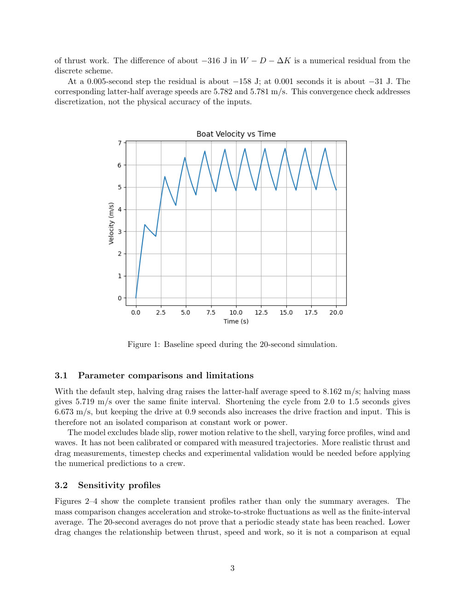<figcaption>Page 3 of 12</figcaption><details><summary>Read page text</summary><pre>of thrust work. The difference of about −316 J in W −D −∆K is a numerical residual from the
discrete scheme.
At a 0.005-second step the residual is about −158 J; at 0.001 seconds it is about −31 J. The
corresponding latter-half average speeds are 5.782 and 5.781 m/s. This convergence check addresses
discretization, not the physical accuracy of the inputs.
Figure 1: Baseline speed during the 20-second simulation.
3.1
Parameter comparisons and limitations
With the default step, halving drag raises the latter-half average speed to 8.162 m/s; halving mass
gives 5.719 m/s over the same finite interval. Shortening the cycle from 2.0 to 1.5 seconds gives
6.673 m/s, but keeping the drive at 0.9 seconds also increases the drive fraction and input. This is
therefore not an isolated comparison at constant work or power.
The model excludes blade slip, rower motion relative to the shell, varying force profiles, wind and
waves. It has not been calibrated or compared with measured trajectories. More realistic thrust and
drag measurements, timestep checks and experimental validation would be needed before applying
the numerical predictions to a crew.
3.2
Sensitivity profiles
Figures 2–4 show the complete transient profiles rather than only the summary averages. The
mass comparison changes acceleration and stroke-to-stroke fluctuations as well as the finite-interval
average. The 20-second averages do not prove that a periodic steady state has been reached. Lower
drag changes the relationship between thrust, speed and work, so it is not a comparison at equal
3
</pre></details></figure><figure class="page" id="page-4">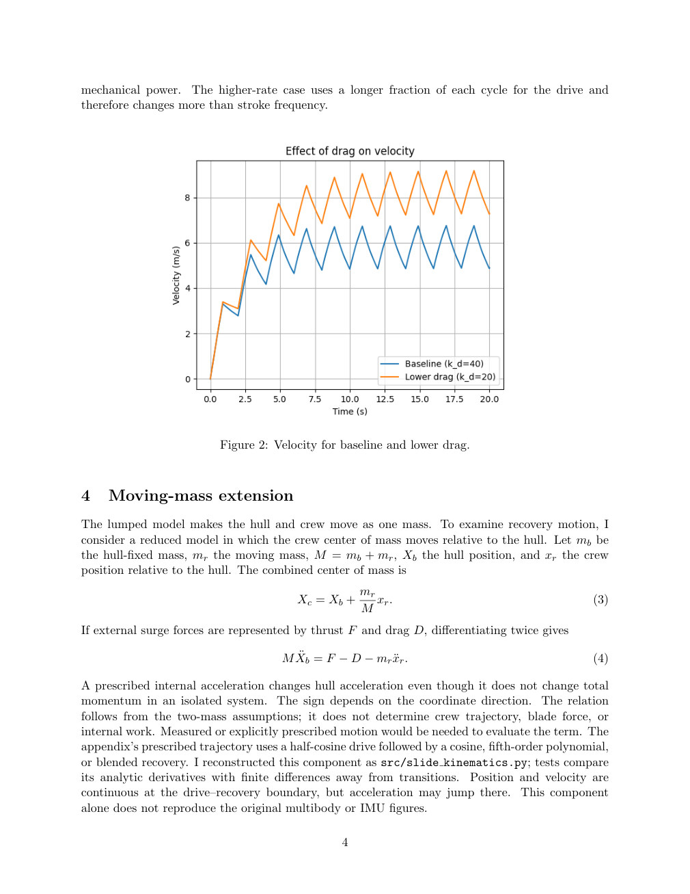<figcaption>Page 4 of 12</figcaption><details><summary>Read page text</summary><pre>mechanical power.
The higher-rate case uses a longer fraction of each cycle for the drive and
therefore changes more than stroke frequency.
Figure 2: Velocity for baseline and lower drag.
4
Moving-mass extension
The lumped model makes the hull and crew move as one mass. To examine recovery motion, I
consider a reduced model in which the crew center of mass moves relative to the hull. Let mb be
the hull-fixed mass, mr the moving mass, M = mb + mr, Xb the hull position, and xr the crew
position relative to the hull. The combined center of mass is
Xc = Xb + mr
M xr.
(3)
If external surge forces are represented by thrust F and drag D, differentiating twice gives
M ¨Xb = F −D −mr¨xr.
(4)
A prescribed internal acceleration changes hull acceleration even though it does not change total
momentum in an isolated system. The sign depends on the coordinate direction. The relation
follows from the two-mass assumptions; it does not determine crew trajectory, blade force, or
internal work. Measured or explicitly prescribed motion would be needed to evaluate the term. The
appendix’s prescribed trajectory uses a half-cosine drive followed by a cosine, fifth-order polynomial,
or blended recovery. I reconstructed this component as src/slide kinematics.py; tests compare
its analytic derivatives with finite differences away from transitions.
Position and velocity are
continuous at the drive–recovery boundary, but acceleration may jump there. This component
alone does not reproduce the original multibody or IMU figures.
4
</pre></details></figure><figure class="page" id="page-5">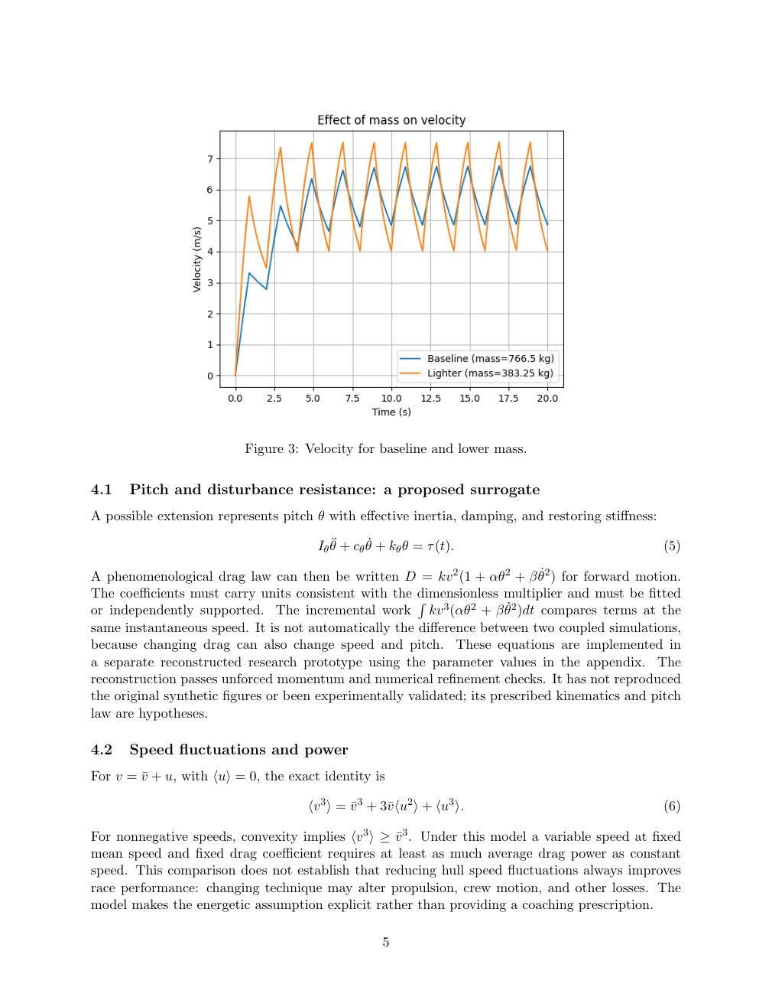<figcaption>Page 5 of 12</figcaption><details><summary>Read page text</summary><pre>Figure 3: Velocity for baseline and lower mass.
4.1
Pitch and disturbance resistance: a proposed surrogate
A possible extension represents pitch θ with effective inertia, damping, and restoring stiffness:
Iθ¨θ + cθ ˙θ + kθθ = τ(t).
(5)
A phenomenological drag law can then be written D = kv2(1 + αθ2 + β ˙θ2) for forward motion.
The coefficients must carry units consistent with the dimensionless multiplier and must be fitted
or independently supported.
The incremental work
R
kv3(αθ2 + β ˙θ2)dt compares terms at the
same instantaneous speed. It is not automatically the difference between two coupled simulations,
because changing drag can also change speed and pitch.
These equations are implemented in
a separate reconstructed research prototype using the parameter values in the appendix.
The
reconstruction passes unforced momentum and numerical refinement checks. It has not reproduced
the original synthetic figures or been experimentally validated; its prescribed kinematics and pitch
law are hypotheses.
4.2
Speed fluctuations and power
For v = ¯v + u, with ⟨u⟩= 0, the exact identity is
⟨v3⟩= ¯v3 + 3¯v⟨u2⟩+ ⟨u3⟩.
(6)
For nonnegative speeds, convexity implies ⟨v3⟩≥¯v3. Under this model a variable speed at fixed
mean speed and fixed drag coefficient requires at least as much average drag power as constant
speed. This comparison does not establish that reducing hull speed fluctuations always improves
race performance: changing technique may alter propulsion, crew motion, and other losses. The
model makes the energetic assumption explicit rather than providing a coaching prescription.
5
</pre></details></figure><figure class="page" id="page-6">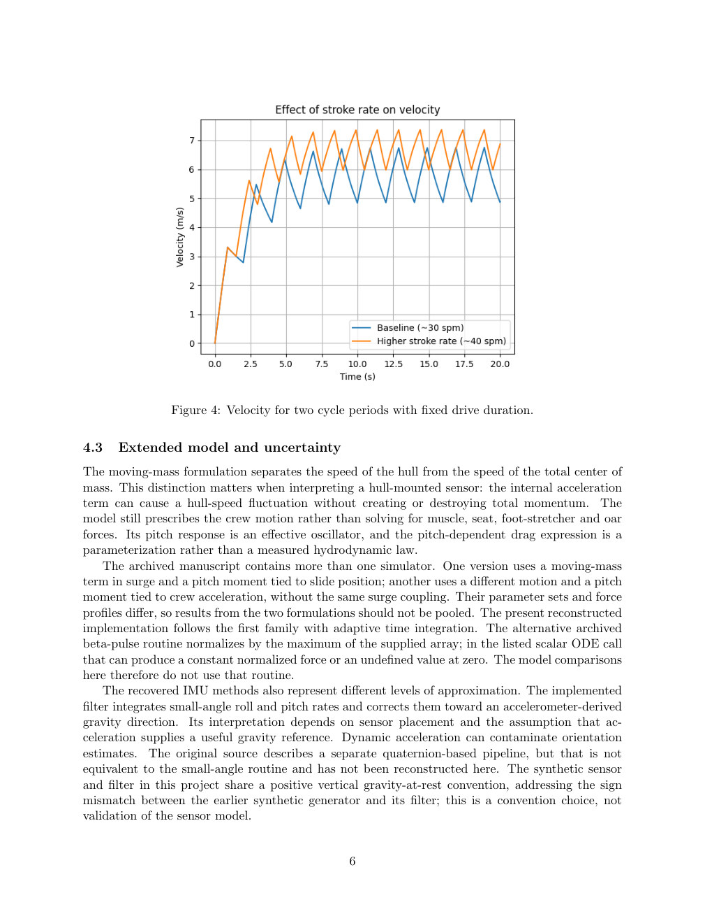<figcaption>Page 6 of 12</figcaption><details><summary>Read page text</summary><pre>Figure 4: Velocity for two cycle periods with fixed drive duration.
4.3
Extended model and uncertainty
The moving-mass formulation separates the speed of the hull from the speed of the total center of
mass. This distinction matters when interpreting a hull-mounted sensor: the internal acceleration
term can cause a hull-speed fluctuation without creating or destroying total momentum.
The
model still prescribes the crew motion rather than solving for muscle, seat, foot-stretcher and oar
forces. Its pitch response is an effective oscillator, and the pitch-dependent drag expression is a
parameterization rather than a measured hydrodynamic law.
The archived manuscript contains more than one simulator. One version uses a moving-mass
term in surge and a pitch moment tied to slide position; another uses a different motion and a pitch
moment tied to crew acceleration, without the same surge coupling. Their parameter sets and force
profiles differ, so results from the two formulations should not be pooled. The present reconstructed
implementation follows the first family with adaptive time integration. The alternative archived
beta-pulse routine normalizes by the maximum of the supplied array; in the listed scalar ODE call
that can produce a constant normalized force or an undefined value at zero. The model comparisons
here therefore do not use that routine.
The recovered IMU methods also represent different levels of approximation. The implemented
filter integrates small-angle roll and pitch rates and corrects them toward an accelerometer-derived
gravity direction.
Its interpretation depends on sensor placement and the assumption that ac-
celeration supplies a useful gravity reference. Dynamic acceleration can contaminate orientation
estimates.
The original source describes a separate quaternion-based pipeline, but that is not
equivalent to the small-angle routine and has not been reconstructed here. The synthetic sensor
and filter in this project share a positive vertical gravity-at-rest convention, addressing the sign
mismatch between the earlier synthetic generator and its filter; this is a convention choice, not
validation of the sensor model.
6
</pre></details></figure><figure class="page" id="page-7">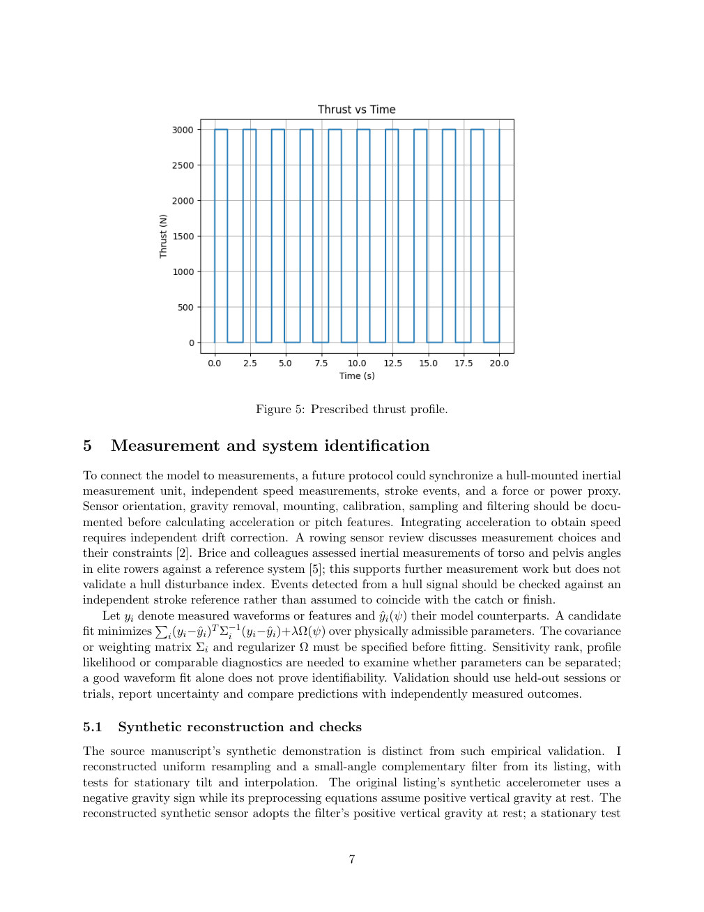<figcaption>Page 7 of 12</figcaption><details><summary>Read page text</summary><pre>Figure 5: Prescribed thrust profile.
5
Measurement and system identification
To connect the model to measurements, a future protocol could synchronize a hull-mounted inertial
measurement unit, independent speed measurements, stroke events, and a force or power proxy.
Sensor orientation, gravity removal, mounting, calibration, sampling and filtering should be docu-
mented before calculating acceleration or pitch features. Integrating acceleration to obtain speed
requires independent drift correction. A rowing sensor review discusses measurement choices and
their constraints [2]. Brice and colleagues assessed inertial measurements of torso and pelvis angles
in elite rowers against a reference system [5]; this supports further measurement work but does not
validate a hull disturbance index. Events detected from a hull signal should be checked against an
independent stroke reference rather than assumed to coincide with the catch or finish.
Let yi denote measured waveforms or features and ˆyi(ψ) their model counterparts. A candidate
fit minimizes P
i(yi−ˆyi)T Σ−1
i (yi−ˆyi)+λΩ(ψ) over physically admissible parameters. The covariance
or weighting matrix Σi and regularizer Ωmust be specified before fitting. Sensitivity rank, profile
likelihood or comparable diagnostics are needed to examine whether parameters can be separated;
a good waveform fit alone does not prove identifiability. Validation should use held-out sessions or
trials, report uncertainty and compare predictions with independently measured outcomes.
5.1
Synthetic reconstruction and checks
The source manuscript’s synthetic demonstration is distinct from such empirical validation.
I
reconstructed uniform resampling and a small-angle complementary filter from its listing, with
tests for stationary tilt and interpolation.
The original listing’s synthetic accelerometer uses a
negative gravity sign while its preprocessing equations assume positive vertical gravity at rest. The
reconstructed synthetic sensor adopts the filter’s positive vertical gravity at rest; a stationary test
7
</pre></details></figure><figure class="page" id="page-8">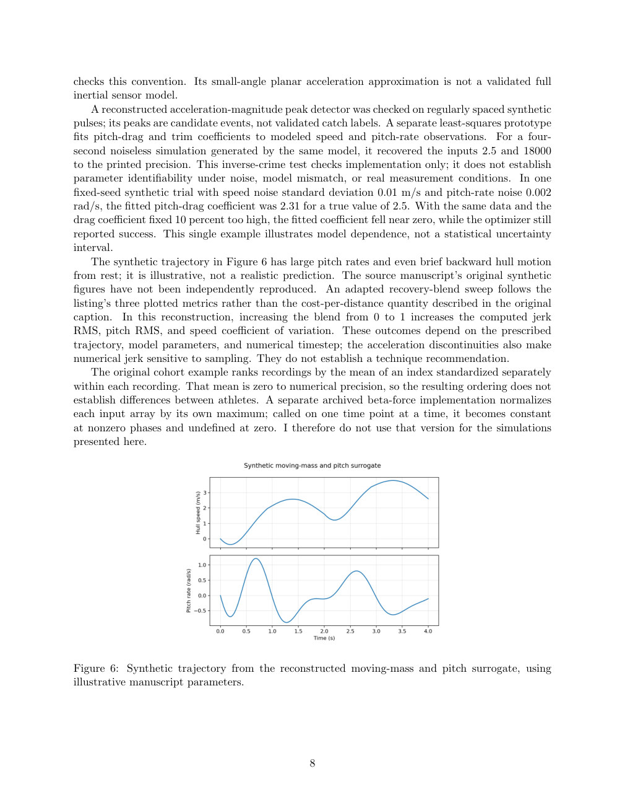<figcaption>Page 8 of 12</figcaption><details><summary>Read page text</summary><pre>checks this convention. Its small-angle planar acceleration approximation is not a validated full
inertial sensor model.
A reconstructed acceleration-magnitude peak detector was checked on regularly spaced synthetic
pulses; its peaks are candidate events, not validated catch labels. A separate least-squares prototype
fits pitch-drag and trim coefficients to modeled speed and pitch-rate observations.
For a four-
second noiseless simulation generated by the same model, it recovered the inputs 2.5 and 18000
to the printed precision. This inverse-crime test checks implementation only; it does not establish
parameter identifiability under noise, model mismatch, or real measurement conditions. In one
fixed-seed synthetic trial with speed noise standard deviation 0.01 m/s and pitch-rate noise 0.002
rad/s, the fitted pitch-drag coefficient was 2.31 for a true value of 2.5. With the same data and the
drag coefficient fixed 10 percent too high, the fitted coefficient fell near zero, while the optimizer still
reported success. This single example illustrates model dependence, not a statistical uncertainty
interval.
The synthetic trajectory in Figure 6 has large pitch rates and even brief backward hull motion
from rest; it is illustrative, not a realistic prediction. The source manuscript’s original synthetic
figures have not been independently reproduced. An adapted recovery-blend sweep follows the
listing’s three plotted metrics rather than the cost-per-distance quantity described in the original
caption.
In this reconstruction, increasing the blend from 0 to 1 increases the computed jerk
RMS, pitch RMS, and speed coefficient of variation. These outcomes depend on the prescribed
trajectory, model parameters, and numerical timestep; the acceleration discontinuities also make
numerical jerk sensitive to sampling. They do not establish a technique recommendation.
The original cohort example ranks recordings by the mean of an index standardized separately
within each recording. That mean is zero to numerical precision, so the resulting ordering does not
establish differences between athletes. A separate archived beta-force implementation normalizes
each input array by its own maximum; called on one time point at a time, it becomes constant
at nonzero phases and undefined at zero. I therefore do not use that version for the simulations
presented here.
Figure 6: Synthetic trajectory from the reconstructed moving-mass and pitch surrogate, using
illustrative manuscript parameters.
8
</pre></details></figure><figure class="page" id="page-9">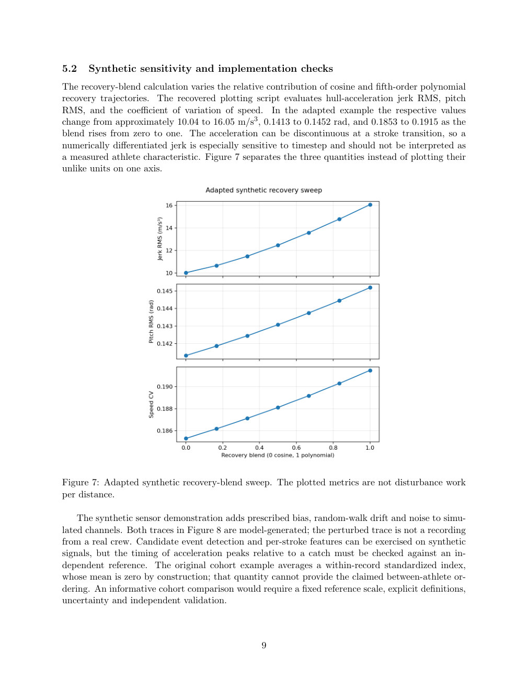<figcaption>Page 9 of 12</figcaption><details><summary>Read page text</summary><pre>5.2
Synthetic sensitivity and implementation checks
The recovery-blend calculation varies the relative contribution of cosine and fifth-order polynomial
recovery trajectories.
The recovered plotting script evaluates hull-acceleration jerk RMS, pitch
RMS, and the coefficient of variation of speed.
In the adapted example the respective values
change from approximately 10.04 to 16.05 m/s3, 0.1413 to 0.1452 rad, and 0.1853 to 0.1915 as the
blend rises from zero to one. The acceleration can be discontinuous at a stroke transition, so a
numerically differentiated jerk is especially sensitive to timestep and should not be interpreted as
a measured athlete characteristic. Figure 7 separates the three quantities instead of plotting their
unlike units on one axis.
Figure 7: Adapted synthetic recovery-blend sweep. The plotted metrics are not disturbance work
per distance.
The synthetic sensor demonstration adds prescribed bias, random-walk drift and noise to simu-
lated channels. Both traces in Figure 8 are model-generated; the perturbed trace is not a recording
from a real crew. Candidate event detection and per-stroke features can be exercised on synthetic
signals, but the timing of acceleration peaks relative to a catch must be checked against an in-
dependent reference. The original cohort example averages a within-record standardized index,
whose mean is zero by construction; that quantity cannot provide the claimed between-athlete or-
dering. An informative cohort comparison would require a fixed reference scale, explicit definitions,
uncertainty and independent validation.
9
</pre></details></figure><figure class="page" id="page-10">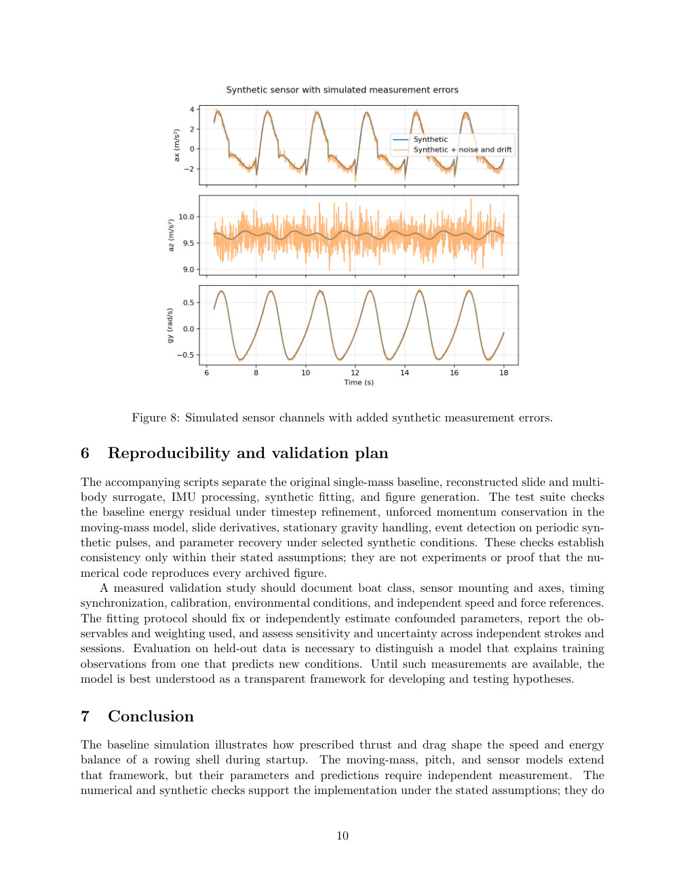<figcaption>Page 10 of 12</figcaption><details><summary>Read page text</summary><pre>Figure 8: Simulated sensor channels with added synthetic measurement errors.
6
Reproducibility and validation plan
The accompanying scripts separate the original single-mass baseline, reconstructed slide and multi-
body surrogate, IMU processing, synthetic fitting, and figure generation. The test suite checks
the baseline energy residual under timestep refinement, unforced momentum conservation in the
moving-mass model, slide derivatives, stationary gravity handling, event detection on periodic syn-
thetic pulses, and parameter recovery under selected synthetic conditions. These checks establish
consistency only within their stated assumptions; they are not experiments or proof that the nu-
merical code reproduces every archived figure.
A measured validation study should document boat class, sensor mounting and axes, timing
synchronization, calibration, environmental conditions, and independent speed and force references.
The fitting protocol should fix or independently estimate confounded parameters, report the ob-
servables and weighting used, and assess sensitivity and uncertainty across independent strokes and
sessions. Evaluation on held-out data is necessary to distinguish a model that explains training
observations from one that predicts new conditions. Until such measurements are available, the
model is best understood as a transparent framework for developing and testing hypotheses.
7
Conclusion
The baseline simulation illustrates how prescribed thrust and drag shape the speed and energy
balance of a rowing shell during startup.
The moving-mass, pitch, and sensor models extend
that framework, but their parameters and predictions require independent measurement.
The
numerical and synthetic checks support the implementation under the stated assumptions; they do
10
</pre></details></figure><figure class="page" id="page-11">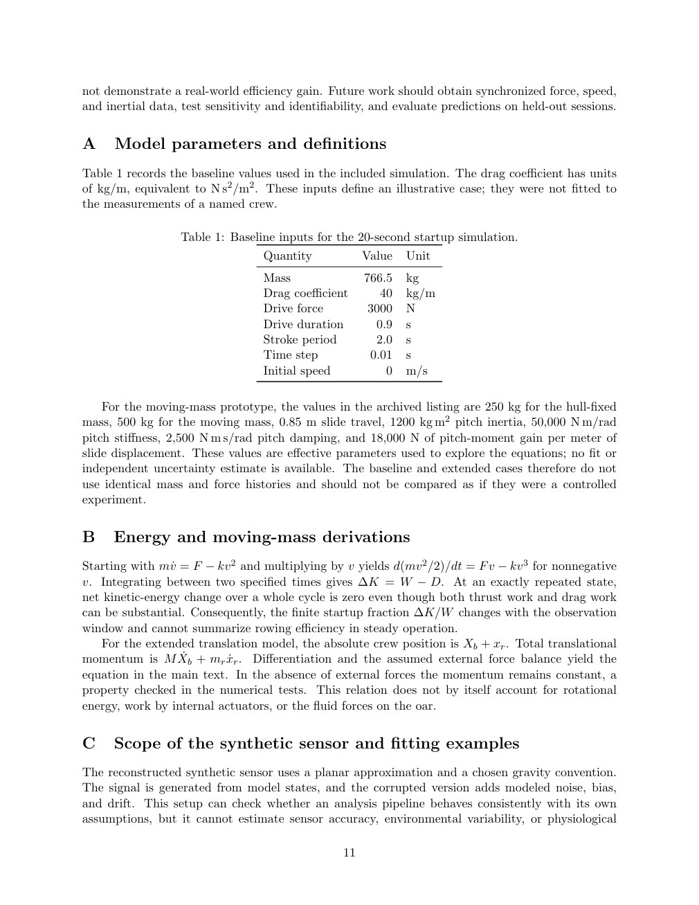<figcaption>Page 11 of 12</figcaption><details><summary>Read page text</summary><pre>not demonstrate a real-world efficiency gain. Future work should obtain synchronized force, speed,
and inertial data, test sensitivity and identifiability, and evaluate predictions on held-out sessions.
A
Model parameters and definitions
Table 1 records the baseline values used in the included simulation. The drag coefficient has units
of kg/m, equivalent to N s2/m2. These inputs define an illustrative case; they were not fitted to
the measurements of a named crew.
Table 1: Baseline inputs for the 20-second startup simulation.
Quantity
Value
Unit
Mass
766.5
kg
Drag coefficient
40
kg/m
Drive force
3000
N
Drive duration
0.9
s
Stroke period
2.0
s
Time step
0.01
s
Initial speed
0
m/s
For the moving-mass prototype, the values in the archived listing are 250 kg for the hull-fixed
mass, 500 kg for the moving mass, 0.85 m slide travel, 1200 kg m2 pitch inertia, 50,000 N m/rad
pitch stiffness, 2,500 N m s/rad pitch damping, and 18,000 N of pitch-moment gain per meter of
slide displacement. These values are effective parameters used to explore the equations; no fit or
independent uncertainty estimate is available. The baseline and extended cases therefore do not
use identical mass and force histories and should not be compared as if they were a controlled
experiment.
B
Energy and moving-mass derivations
Starting with m˙v = F −kv2 and multiplying by v yields d(mv2/2)/dt = Fv −kv3 for nonnegative
v. Integrating between two specified times gives ∆K = W −D. At an exactly repeated state,
net kinetic-energy change over a whole cycle is zero even though both thrust work and drag work
can be substantial. Consequently, the finite startup fraction ∆K/W changes with the observation
window and cannot summarize rowing efficiency in steady operation.
For the extended translation model, the absolute crew position is Xb + xr. Total translational
momentum is M ˙Xb + mr ˙xr.
Differentiation and the assumed external force balance yield the
equation in the main text. In the absence of external forces the momentum remains constant, a
property checked in the numerical tests. This relation does not by itself account for rotational
energy, work by internal actuators, or the fluid forces on the oar.
C
Scope of the synthetic sensor and fitting examples
The reconstructed synthetic sensor uses a planar approximation and a chosen gravity convention.
The signal is generated from model states, and the corrupted version adds modeled noise, bias,
and drift. This setup can check whether an analysis pipeline behaves consistently with its own
assumptions, but it cannot estimate sensor accuracy, environmental variability, or physiological
11
</pre></details></figure><figure class="page" id="page-12">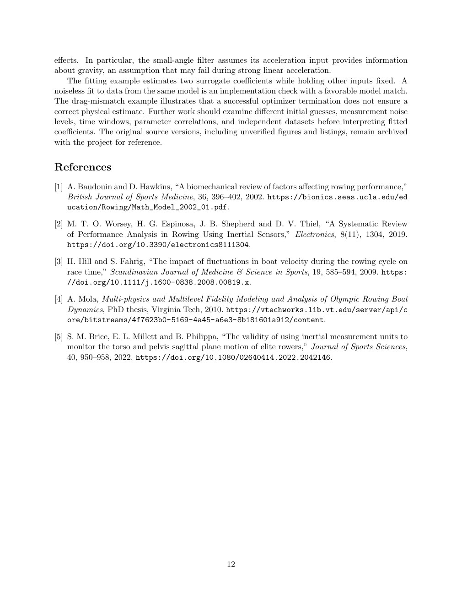<figcaption>Page 12 of 12</figcaption><details><summary>Read page text</summary><pre>effects. In particular, the small-angle filter assumes its acceleration input provides information
about gravity, an assumption that may fail during strong linear acceleration.
The fitting example estimates two surrogate coefficients while holding other inputs fixed. A
noiseless fit to data from the same model is an implementation check with a favorable model match.
The drag-mismatch example illustrates that a successful optimizer termination does not ensure a
correct physical estimate. Further work should examine different initial guesses, measurement noise
levels, time windows, parameter correlations, and independent datasets before interpreting fitted
coefficients. The original source versions, including unverified figures and listings, remain archived
with the project for reference.
References
[1] A. Baudouin and D. Hawkins, “A biomechanical review of factors affecting rowing performance,”
British Journal of Sports Medicine, 36, 396–402, 2002. https://bionics.seas.ucla.edu/ed
ucation/Rowing/Math_Model_2002_01.pdf.
[2] M. T. O. Worsey, H. G. Espinosa, J. B. Shepherd and D. V. Thiel, “A Systematic Review
of Performance Analysis in Rowing Using Inertial Sensors,” Electronics, 8(11), 1304, 2019.
https://doi.org/10.3390/electronics8111304.
[3] H. Hill and S. Fahrig, “The impact of fluctuations in boat velocity during the rowing cycle on
race time,” Scandinavian Journal of Medicine &amp; Science in Sports, 19, 585–594, 2009. https:
//doi.org/10.1111/j.1600-0838.2008.00819.x.
[4] A. Mola, Multi-physics and Multilevel Fidelity Modeling and Analysis of Olympic Rowing Boat
Dynamics, PhD thesis, Virginia Tech, 2010. https://vtechworks.lib.vt.edu/server/api/c
ore/bitstreams/4f7623b0-5169-4a45-a6e3-8b181601a912/content.
[5] S. M. Brice, E. L. Millett and B. Philippa, “The validity of using inertial measurement units to
monitor the torso and pelvis sagittal plane motion of elite rowers,” Journal of Sports Sciences,
40, 950–958, 2022. https://doi.org/10.1080/02640414.2022.2042146.
12
</pre></details></figure></div></div><details class="reader-help"><summary>Use the browser’s PDF viewer instead</summary><object data="report/rowing-report.pdf" type="application/pdf" width="100%" height="850"><p>The full report is available in the reader above.</p></object></details></div></section>
<section id="work"><div class="wrap"><div class="eyebrow">03 / Reproducible work</div><h2>Models, methods, and checks.</h2><p class="intro">The current source collection separates the baseline simulation from adapted research prototypes. All versions remain identifiable in the file catalog.</p><div class="grid"><article class="card"><h3>Baseline &amp; sensitivity</h3><ul class="code-list"><li><a href="work/src/rowing_model.py">Single-mass simulation</a></li><li><a href="work/src/rowing_analysis.py">Sensitivity analysis</a></li><li><a href="work/results/rowing_results_summary.txt">Numerical results</a></li><li><a href="work/paper/rowing_paper.tex">Current manuscript source</a></li></ul></article><article class="card"><h3>Research prototypes</h3><ul class="code-list"><li><a href="work/src/slide_kinematics.py">Prescribed slide kinematics</a></li><li><a href="work/src/multibody_model.py">Surge–pitch surrogate</a></li><li><a href="work/src/imu_processing.py">Synthetic IMU workflow</a></li><li><a href="work/src/parameter_fit.py">Parameter fitting</a></li><li><a href="work/src/fit_robustness_demo.py">Noise &amp; mismatch example</a></li></ul></article><article class="card"><h3>Run &amp; inspect</h3><p>Install the listed dependencies in a virtual environment. The README documents the simulation commands and limitations.</p><ul class="code-list"><li><a href="work/README.md">Research README</a></li><li><a href="work/requirements.txt">Python dependencies</a></li><li><a href="archive.html?status=Current">All current files &amp; tests</a></li><li><a href="https://github.com/gabrielcirker/rowing-research">Source repository</a></li></ul></article></div><aside class="note">The adapted figures use a different integrator and gravity convention from archived listings. Synthetic fitting tests check implementation consistency; they do not establish real-world identifiability or empirical validation.</aside><h3>Complete current figure collection</h3><div class="figure-grid"><figure><a href="work/figures/speed_plot.png"></a><figcaption><strong>Boat speed</strong><br>Baseline startup under prescribed thrust and quadratic drag.</figcaption></figure><figure><a href="work/figures/thrust_plot.png">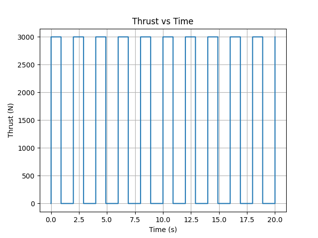</a><figcaption><strong>Prescribed thrust</strong><br>The force is applied for 0.9 seconds in each 2-second cycle.</figcaption></figure><figure><a href="work/figures/drag_effect.png">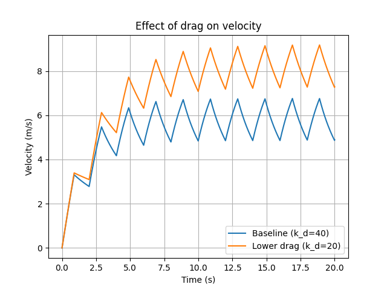</a><figcaption><strong>Drag sensitivity</strong><br>One-parameter comparison of the supplied drag coefficients.</figcaption></figure><figure><a href="work/figures/mass_effect.png">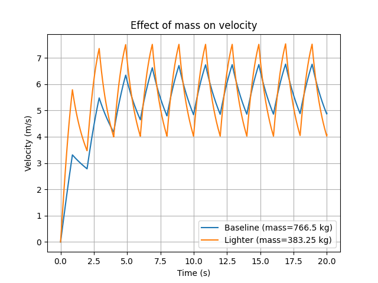</a><figcaption><strong>Mass sensitivity</strong><br>One-parameter comparison of total modeled mass.</figcaption></figure><figure><a href="work/figures/stroke_effect.png">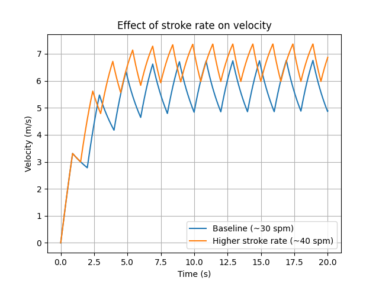</a><figcaption><strong>Stroke period</strong><br>Fixed drive duration means the drive fraction and mean force also change.</figcaption></figure><figure><a href="work/figures/synthetic_surrogate.png">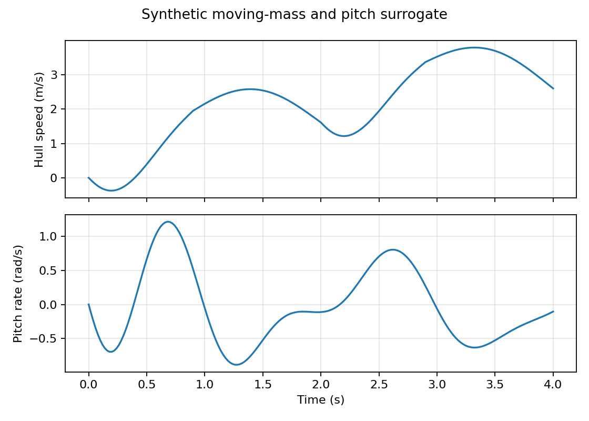</a><figcaption><strong>Moving-mass surrogate</strong><br>Model-generated trajectory, not an observed crew.</figcaption></figure><figure><a href="work/figures/adapted_pitch_and_speed.png">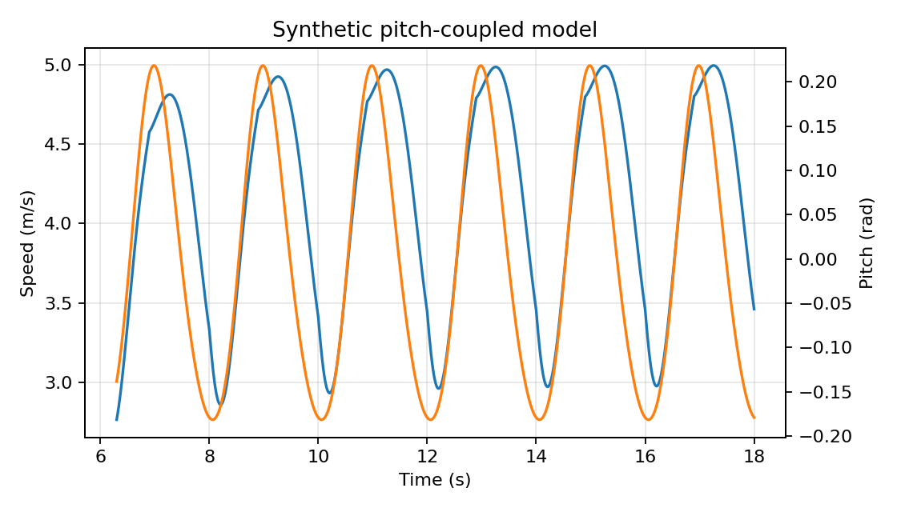</a><figcaption><strong>Adapted pitch and speed</strong><br>Reconstructed numerical demonstration; not an exact original-figure reproduction.</figcaption></figure><figure><a href="work/figures/adapted_smoothness_sweep.png">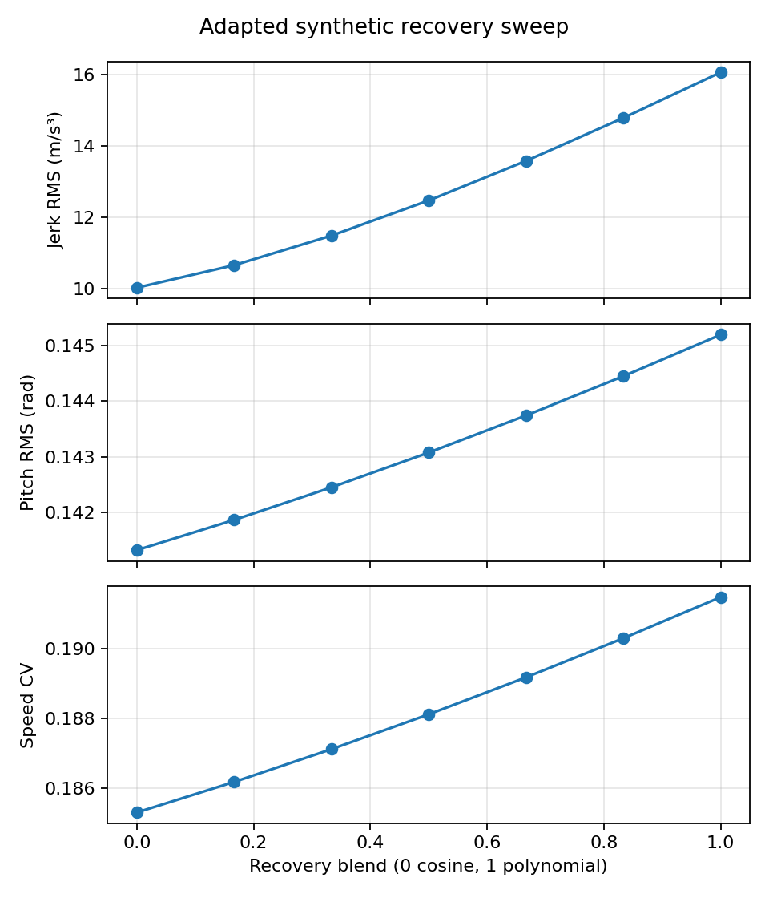</a><figcaption><strong>Recovery-blend sweep</strong><br>Jerk RMS, pitch RMS, and speed variation have distinct units and interpretations.</figcaption></figure><figure><a href="work/figures/adapted_synthetic_imu.png">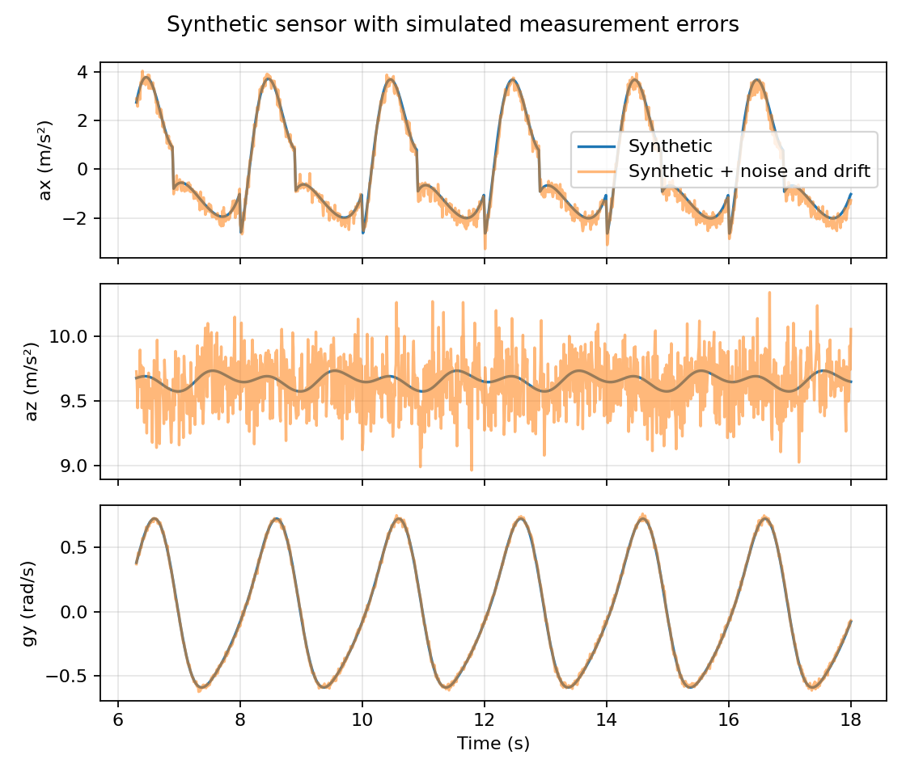</a><figcaption><strong>Synthetic sensor channels</strong><br>Both the clean and perturbed traces are simulated.</figcaption></figure></div></div></section>
<section class="soft"><div class="wrap"><div class="archive-banner"><div><div class="eyebrow">04 / Research history</div><h2>The work beyond the final report.</h2><p>64 archived files trace the earlier manuscripts, models, and figures. Exact duplicates share one record, with their source appearances preserved.</p></div><a href="archive.html" class="button light">Browse all work →</a></div></div></section></main><footer><div class="wrap"><span>Gabriel Cirker · Rowing energy transfer research</span><span><a href="https://github.com/gabrielcirker/rowing-research">GitHub repository</a> · <a href="archive/catalog.json">File manifest</a> · <a href="https://gabrielcirker.github.io/">Portfolio</a></span></div></footer><script src="assets/main.js" defer></script></body></html>